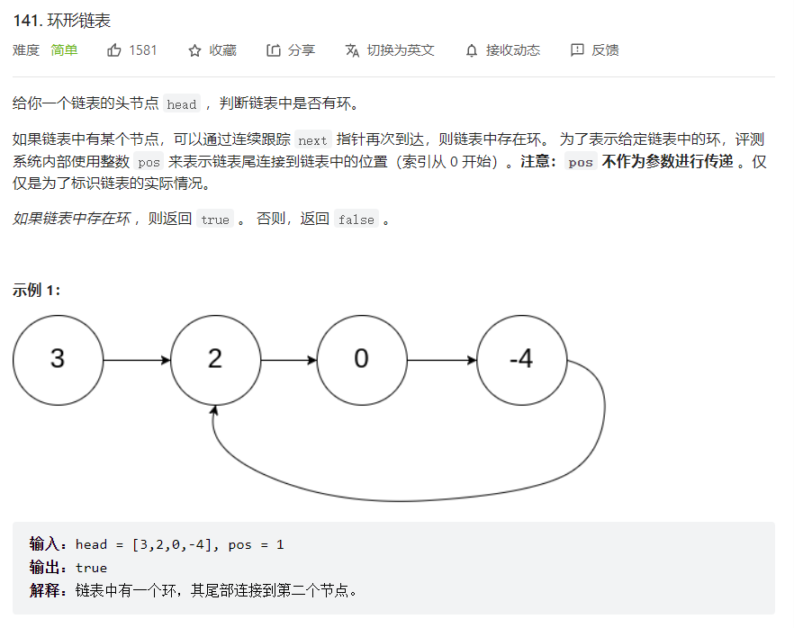
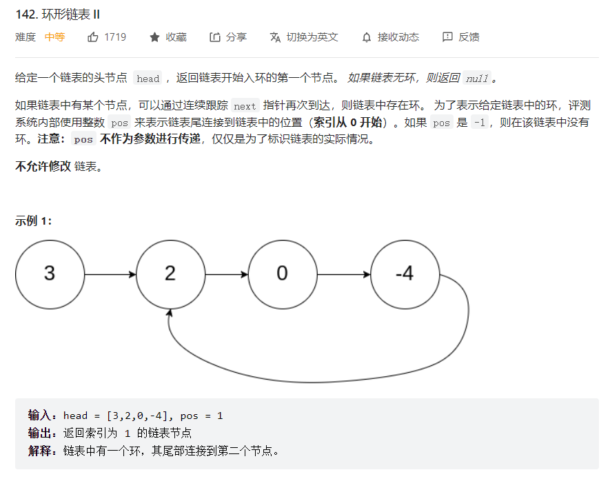

LeetCode之环形链表
参考：https://blog.csdn.net/liuwp5/article/details/109207360
https://www.zhihu.com/question/23208893/answer/109705707
事情起因是在刷LeetCode的时候遇到了这道题：

我第一反应就是用双指针，让快指针先走，然后构造快慢指针在环形起点相遇。但挣扎了半天也不知道要怎么实现，遂看了答案。
答案给出的最优解确实也是双指针，但并不是改变两个指针的起始位置，而是让快指针的步长变成慢指针的两倍，如果最终两个指针相遇就代表有环。
学渣如我，对这个解决方案有了根本性的不理解：为什么快慢指针一定会相遇呢？
模糊地想，快指针每次走2步，慢指针每次走1步，它们又是同时移动，故每行动一次，这两指针之间的距离就会缩短一步。 假设给一个足够长的路程，那么就这样一步一步地缩短距离，这两指针最终会相遇也是理所当然的。怎么让路程变得足够长呢，当然是提供一个循环的路了。 于是这一切似乎得到了完美的解答。
但事实上这不符合我的思考习惯，这个解答是已经知道这样做一定会相遇的情况下给出的解释。
按我平常的思考方式来说，就算会想到要通过快慢指针的步长进行解题，也不能直接洞察到他们最终会相遇——步长大的最终追赶上步长小的这件事显而易见，但在循环里“追上”这件事毫无意义。况且在离散的情况下，追上不等于会相遇。
按我的思维方式，会以此为条件开始研究“怎样才能让它们最终相遇”“相遇的位置会和起点有关系吗”？
没错，这就我这篇博客主要想探讨的，就是这个：两个指针的步长要满足什么样的关系，才能让它们相遇？
问题①的求解
显而易见的，这是个数学问题，于是我们先给出如下定义：
- 环的长度为L
- 慢指针步长r1，快指针步长r2
- 慢指针刚进入循环时，快指针和慢指针之间的距离s
s+r1*t - r2*t = k*L (k为正整数)，化简得L*k + (r2-r1)*t = s。则问题转化成：当上述等式成立时，只要t存在整数解，两指针必定相遇。
此时我们引入扩展欧几里得算法：
一定存在整数 x, y 满足等式 a*x + b*y = gcd(a,b)，
cd(a,b)表示的是a和b的最大公约数。我们想让t有整数解，故a=L，x=k，b=r2-r1，y=t。
则只要满足s = k*gcd(L, r2-r1)(k为正整数)，一切都make sense了。翻译成人话就是，要满足两个指针能在循环内相遇，则快慢指针之间的差距s要能被环长度L与步长差r2-r1的最大公约数整除,
这种情况下的快慢指针才是能有效检测是否存在环的指针。因为当r2-r1=1时，s = k*gcd(L, r2-r1)永远成立，所以只要满足快指针步长比慢指针长1就一定能相遇。
（其实在poj上还真有类似的题目，指路：青蛙的约会）
这样就结束了吗，当然没有。一般情况下，我们知道链表存在环了，肯定会下意识地去往“环的入口”在哪想。那么我们已经可以求得相遇点，要怎么才能接着推出入口点呢？
问题②的求解

我们现在让快指针以2步慢指针以一步的速度走，根据上面的问题的结论，它们最终会在环内相遇。
我们假定相遇点到入口点的距离为n，头结点到入口点的距离为m，环长依旧是L，移动次数是t。
则此时慢指针走的路程为r1*t = m + n + k1*L(k1为某个正整数)，快指针走的路程为r1*2*t = m + n + k2*L(k2为某个正整数)。
相减可得r1*t = (k2 - k1)*L，故我们可知快慢指针走的路程是环长的整数倍。
再和第一个式子联立可得m + n = (k2 - 2*k1)*L。
剩下的明天再写吧。